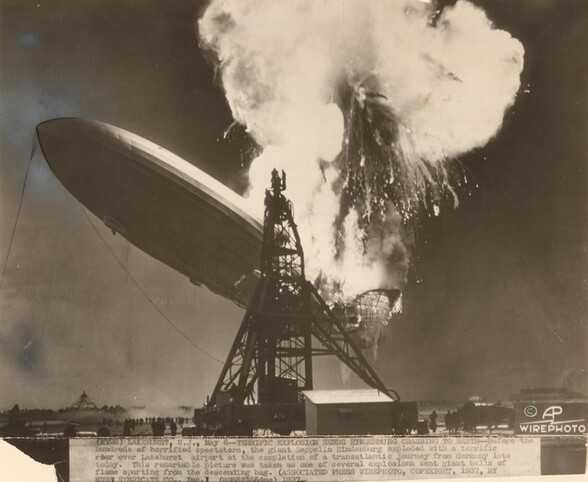

Water

Description:
Water is the common name for dihydrogen monoxide or H2O. The molecule is produced from numerous chemical reactions, including the synthesis reaction from its elements, hydrogen, and oxygen.
Ingredients:
Steps:
- Mix the two gases together.
- Add a spark or sufficient heat to provide the activation energy to start the reaction.
- Energy must be supplied to break the covalent bonds that hold H2 and O2 molecules together.